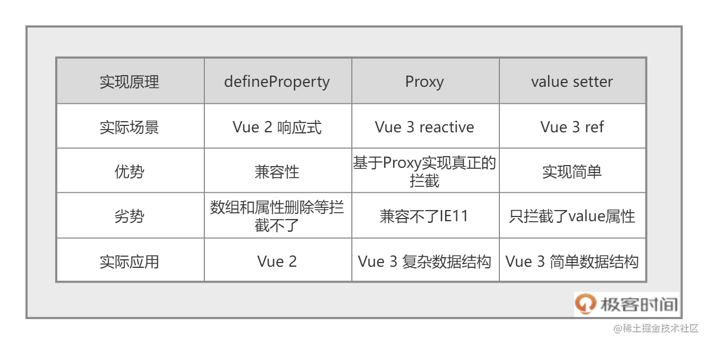
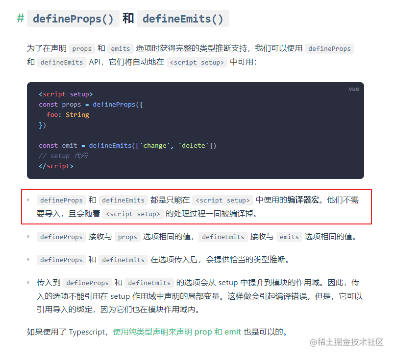
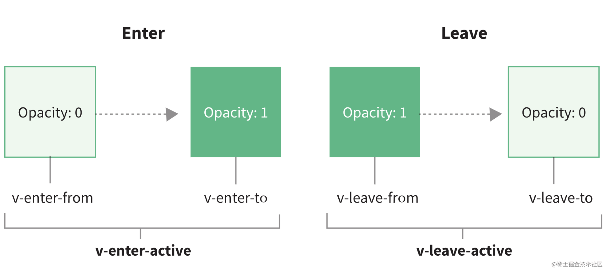

前端框架发展史 前端三大框架都是如何处理数据：
Angular脏检查。所谓的脏检查，指的是 Angular 1 在对数据变化的检查上，遵循每次用户交互时都检查一次数据是否变化，有变化就去更新 DOM 这一方法
Vue使用响应式。初始化的时候，Watcher 监听了数据的每个属性，这样数据发生变化的时候，我们就能精确地知道数据的哪个 key 变了，去针对性修改对应的 DOM 即可（我们在网页中使用{{}}渲染一个变量，Vue 1 就会在内容里保存一个监听器监控这个变量，我们称之为 Watcher，数据有变化，watcher 会收到通知去更新网页。）
React虚拟dom，在 React 中，HTML 会被映射成一个 JavaScript 的对象进行描述。这个对象就像数据和实际 DOM 的一个缓存层，通过管理这个对象的变化，来减少对实际 DOM 的操作。
vue2缺陷
Vue 2 是使用 Flow.js 来做类型校验。但现在 Flow.js 已经停止维护了，整个社区都在全面使用 TypeScript 来构建基础库，Vue 团队也不例外。
Vue 2 响应式并不是真正意义上的代理，而是基于 Object.defineProperty() 实现的。对于 Object.defineProperty() 这个 API 的细节，我们在后面讲源码时会讲到，现在你只需要知道这个 API 并不是代理，而是对某个属性进行拦截，所以有很多缺陷，比如：删除数据就无法监听，需要 $delete 等 API 辅助才能监听到。
Option API 在组织代码较多组件的时候不易维护。对于 Option API 来说，所有的 methods、computed 都在一个对象里配置，这对小应用来说还好。但代码超过 300 行的时候，新增或者修改一个功能，就需要不停地在 data，methods 里跳转写代码，我称之为上下反复横跳。
vue3中的特性 新组件 Fragment: Vue 3 组件不再要求有一个唯一的根节点，清除了很多无用的占位 div。
杂项
在<script setup>标签内定义的变量和函数，都可以在模板中直接使用
1 2 3 4 5 6 7 <template > <h1 > {{ msg }} </h1 > </template > <script setup > const msg = "啊啊啊" ;</script >
vue3中无需声明组件，在这段代码里，我们直接 import TodoList.vue 组件，然后<script setup>会自动把组件注册到当前组件，这样我们就可以直接在 template 中使用来显示清单的功能。
1 2 3 4 5 6 7 8 <template > <h1 > 这是首页</h1 > <TodoList /> </template > <script setup > import TodoList from "../components/TodoList.vue" ;</script >
<script setup>好用的功能
如果不写setup
1 2 3 4 5 6 7 8 9 10 11 12 13 14 15 <script > import { ref } from "vue" ;export default { setup ( let count = ref (1 ) function add ( count.value ++ } return { count, add } } } </script >
使用setup
1 2 3 4 5 6 7 <script setup > import { ref } from "vue" ; let count = ref (1 ); function add ( count.value ++; } </script >
顶层await，如果使用await，setup前面会自动加一个async
1 2 const data = await fetch("" )
通过 v-bind 函数，直接在 CSS 中使用 JavaScript 中的变量
1 2 3 4 5 6 7 8 9 10 11 12 13 14 15 16 17 18 <template > <h1 @click ="test" > 这是首页</h1 > </template > <script setup > import { ref } from "vue" ;let color = ref ("red" );function test ( color.value = Math .random () > 0.5 ? "blue" : "red" ; } </script > <style scoped > h1 { color : v-bind ("color" ); } </style >
vue3中reactive就是基于Proxy实现的响应式；ref则是利用对象的get和set函数进行监听来实现的响应式，这也是ref使用.value的原因！

响应式原理是什么呢？Vue 中用过三种响应式解决方案，分别是 defineProperty、Proxy 和 value setter。
1 2 3 4 5 6 7 8 9 10 11 12 13 14 15 16 17 18 19 20 21 22 23 24 25 26 27 28 29 30 let getDouble = (n) => n * 2 ;let obj = {};let count = 1 ;let double = getDouble(count);let proxy = new Proxy (obj, {get : function (target, prop ) return target[prop];set : function (target, prop, value ) if (prop === "count" ) {double = getDouble(value);delete target[prop];if (prop === "count" ) {double = NaN ;console .log(obj.count, double );2 ;console .log(obj.count, double );delete proxy.count;console .log(obj.count, double );
1 2 3 4 5 6 7 8 9 10 11 12 13 14 15 16 17 let getDouble = (n) => n * 2 ;let _value = 1 ;double = getDouble(_value);let count = {get value ()return _value;set value (val )double = getDouble(_value);value , double );value = 2 ;value , double );
1 2 3 4 5 6 7 8 9 10 11 12 13 14 15 16 17 18 n =>2 count = 1 count )'count' ,{return count count = valconsole .log (double) count = 2 console .log (double)
vue3中定义props类型，我们使用defineProps来规范传递数据的格式。Vue3.2 版本后 defineProps 和 defineEmits 无需导入

1 2 3 4 5 6 7 8 9 10 11 12 13 14 15 <template > <div > {{ rate } } </div > </template > <script setup > import { defineProps, computed } from "vue" ; let props = defineProps ({ value: { type: Number, default : 2 } , }); let rate = computed (() => "★★★★★☆☆☆☆☆" .slice (5 - props.value , 10 - props.value ) ); </script >
我们使用defineEmit来向父组件派发事件
1 2 3 4 5 6 7 8 9 10 11 12 13 14 15 16 17 18 19 import { defineEmits } from "vue" ;let emits = defineEmits ("update-rate" );function onRate (num ) {emits ("update-rate" , num);<Rate @update-rate ="update" > </Rate > <script setup > import { ref } from "vue" ;import Rate from "./components/Rate1.vue" ;function update (num ) { score.value = num; } </script >
组件数据双向绑定（组件的 v-model），为什么要改成 modelValue？ 因为默认情况下，组件上的 v-model 使用 modelValue 作为 prop，同时使用 update:modelValue 作为事件 参考官方文档
1 2 3 4 5 6 7 8 9 10 11 12 13 14 15 16 17 18 19 20 21 22 23 24 25 26 27 28 29 30 // 子组件 <template > <span @click ="onRate(num)" v-for ="num in 5" :key ="num" > ☆</span > </template > <script setup > import { defineProps, defineEmits } from "vue" ;let props = defineProps ({ modelValue : Number , }); let emits = defineEmits (["update:modelValue" ]);function onRate (num ) { emits ("update:modelValue" , num); } </script > // 父组件 <template > <h1 > 你的评分是 {{ score }} </h1 > <Rate v-model ="score" > </Rate > </template > <script setup > import { ref } from "vue" ;import Rate from "../components/Rate.vue" ;let score = ref (3 );</script >
vue3动画，在 Vue 中，如果我们想要在显示和隐藏标题文字的时候，加入动效进行过渡，那么我们直接使用 transition 组件包裹住需要动画的元素就可以了。

1 2 3 4 5 6 7 8 9 10 11 12 13 14 15 16 <button @click ="toggle" > click</button > <transition name ="fade" > <h1 v-if ="showTitle" > 你好 Vue 3</h1 > </transition > <style > .fade-enter-active ,.fade-leave-active { transition : opacity 0.5s linear; } .fade-enter-from ,.fade-leave-to { opacity : 0 ; } </style >
列表过渡
1 2 3 4 5 6 7 8 9 10 11 12 13 14 15 16 17 18 19 20 <transition-group name ="flip-list" tag ="ul" > <li v-for ="(todo, i) in todos" :key ="i" > <input type ="checkbox" v-model ="todo.done" /> <span :class ="{ done: todo.done }" > {{ todo.title }} </span > </li > </transition-group > <style > .flip-list-enter-active ,.flip-list-leave-active { transition : all 0.5s ease; color : red; } .flip-list-enter-from ,.flip-list-leave-to { opacity : 0 ; transform : translateX (30px ); color : yellowgreen; } </style >
vue3中使用vuex
1 2 3 4 5 6 7 8 9 10 11 12 13 14 15 16 17 18 19 20 21 22 23 24 25 26 27 28 29 30 31 32 33 34 35 36 37 38 39 40 41 42 43 44 45 46 47 48 49 50 51 52 53 54 55 56 57 58 59 60 61 62 63 import { createStore } from "vuex" ;export const store = createStore ({state (return {count : 1 ,getters : {double (state ) {return state.count * 2 ;mutations : {add (state ) {count ++;actions : {async asyncAdd ({ commit } ) {const { data } = await homeBaseData ();commit ('add' , data.articleCount );import { createApp } from "vue" ;import App from "./App.vue" ;import router from "./router/index" ;import { store } from "./store/index" ;createApp (App ).use (store).use (router).mount ("#app" );<template > <div @click ="add" > 组件中的 {{ count }} 处理后的 {{ double }} </div > </template > <script setup > import { computed } from "vue" ;import { useStore } from "vuex" ;let store = useStore ();let count = computed (() => store.state .count );let double = computed (() => store.getters .double );function add ( store.commit ("add" ); } function asyncAdd ( store.dispatch ("asyncAdd" ); } </script >
vue-router